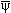
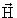
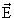
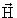
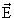

До сих пор мы подразумевали, что фотон- такая же частица как и все остальные : бозон со спином 1 и массой 0. Но оказывается, его существование может быть истолковано как проявление локальной калибровочной инвариантности лагранжиана, описывающего свободное поле заряженного фермиона спина 1/2, например, электрона. Свободное движение электрона подчиняется уравнению Дирака
(∂μγμ- me)ψe(x) = 0,
которое может быть получено из лагранжиана
L0 = e(x)∂μγμψe(x) + mee(x)ψe(x). |
(3.16) |
Этот лагранжиан инвариантен относительно калибровочного преобразования
ψ'e(x) = еiαψe(x),
где α - произвольная
вещественная фаза. Потребуем теперь
инвариантности лагранжиана относительно
подобного, но локального калибровочного
преобразования, когда  является функцией x:
является функцией x:
ψ'e(x) = еiα(x)ψe(x). |
(3.17) |
Но L0 неинвариантен относительно подобного локального калибровочного преобразования:
L'0 = |
(3.18) |
Для того, чтобы убрать член, нарушающий калибровочную инвариантность, введем векторное поле Аμ с калибровочным преобразованием
A' = A - , |
(3.19) |
взаимодействие которого с электроном зададим лагранжианом
ee(x)γμψe(x)A,
где e- константа связи или константа
взаимодействия. Массу этого поля мы ввести не
можем, поскольку очевидным образом массовый член
в лагранжиане  АμАμ
неинвариантен относительно выбранного
калибровочного преобразования для поля Аμ. Отождествим поле
Аμ с электромагнитным полем и
запишем окончательное выражение для
лагранжиана, инвариантного относительно
локальных калибровочных преобразований
абелевой группы U(1)
АμАμ
неинвариантен относительно выбранного
калибровочного преобразования для поля Аμ. Отождествим поле
Аμ с электромагнитным полем и
запишем окончательное выражение для
лагранжиана, инвариантного относительно
локальных калибровочных преобразований
абелевой группы U(1)
L0 = e(x)∂μγμψe(x) - |
(3.20) |
где F описывает свободное
электромагнитное поле,
описывает свободное
электромагнитное поле,
Fμν = ∂μАν - ∂νАμ,
удовлетворяющее уравнениям Максвелла
∂μFμν = 0, ∂μАμ = 0.
Векторный 4-потенциал электромагнитного поля Аμ = ( ,) связан с
измеряемыми на опыте магнитным и электрическим полями
соотношениями
,) связан с
измеряемыми на опыте магнитным и электрическим полями
соотношениями
а тензор электромагнитного поля Fμν выражается через поля и как
Уравнения Максвелла в присутствии зарядов и токов имеют вид
|
(3.21) |
где  - плотность
электрического заряда, j - плотность
электрического тока. В 4-мерном виде уравнения
Максвелла в присутствии зарядов и токов можно
записать в виде:
- плотность
электрического заряда, j - плотность
электрического тока. В 4-мерном виде уравнения
Максвелла в присутствии зарядов и токов можно
записать в виде:
|
(3.22) |